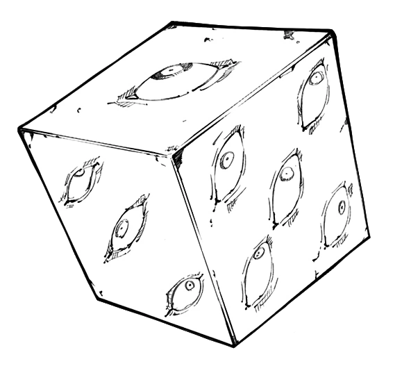

Why is he influential To Me ?
Why Gojo is influential to me is because I like his character I could write more but I will try to summerize it. Gojo is actually one of the most tragic character in Jik he was born with the powers of a god and the world around him turned him into a god and made him shoulder their burdens like a god that's why he's so obsessed w strength he wants to share the burden rather have to carry it alone

He can't see trees for the forest, every other person in the world is the same to him, and this is entirely dehumanizing way of thinking for both Gojo and everyone around him. We connect to others by sharing our individual struggles and experiences and Gojo never really had that. He doesn't relate to other humans, because he isn't like them, nor they can relate to him. He is inherently alone his whole life.
Gojo Satoru